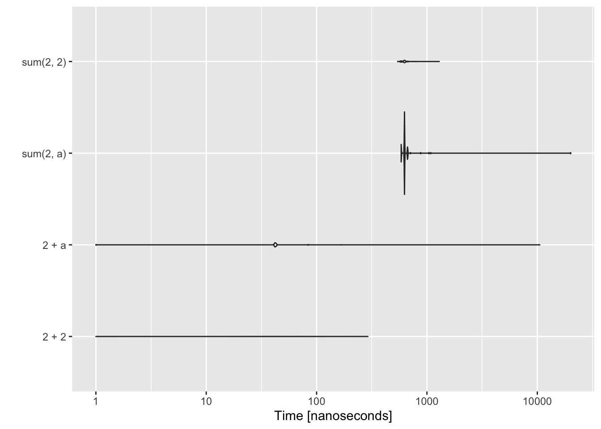
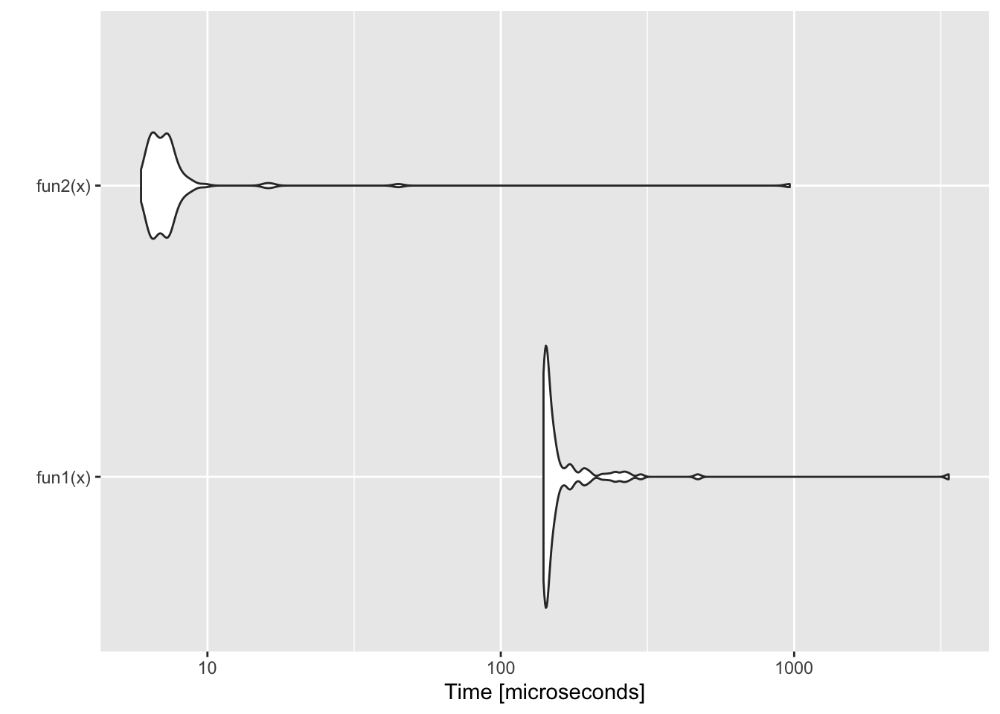

| Compartmentalized | Documented | Extendible | Reproducible | Robust |
This week I will discuss how to make an R package. R packages are not just for work that you share with others. Most of my code projects are organized into an R package and definitely any project that I have that involves data and code is organized into an R package. The package framework really helps you write robust code and well documented code. It also makes it easy to bundle data with code. Organizing your code into an R package is very, very easy. If you are at the stage where you write functions and multiple R scripts for your projects, you need to be aware of how to package your code because it is such a powerful (and common) code organization method in R. By the end of this session, you will be able to build your own mini R package. I’ll show you how to host it on GitLab or GitHub with a nice little landing page.
If/when you want to go into R packaging in more depth, see Hadley Wickham’s book R Packages.
An R package is an easy and the standard way to organize your R code, document your code, and share your code with other people. Why use an R package rather than just make a bunch of scripts?
Windows users: You might need to install RTools. Note there is a different RTools for R 4.0.0 (released in April 2020) versus earlier R releases. Look for the little link for earlier versions of RTools if you don’t have 4.0.0 installed. Technically, it says you only need RTools to install packages with C/C++ so you might be fine. Personally, I always install RTools on my Windows machines since I install packages with C/C++ sometimes. But to keep things simple, try building a package without RTools and see if it works.
Mac users: You don’t need anything.
MyNewPackage and select the directory where to put it.2 files and a directory.
DESCRIPTION This file has the meta-data about your package. Name and what packages it depends on. Most of it is self-explanatory. The Imports: is any functions from other packages that you use.
NAMESPACE This file indicates what needs to be exposed to users for your R package. For our course, you won’t need to edit as devtools takes care of it.
R directory This is where all your R code goes for your package.
man A directory for documentation. You won’t need to write this. It will be added automatically.
data A directory for data files saved in RData format (with the ending .RData)
You have built this package and loaded it. You can use the package functions. Type
hello()littleforecast.R and save in the R directory.You need to install the forecast package for this to work.
littleforecast <- function(data, nyears=10){
fit <- forecast::auto.arima(data)
fc <- forecast::forecast(fit, h = nyears)
ggplot2::autoplot(fc)
}export(littleforecast)Depends: R (>= 3.4.1), ggplot2
Imports: forecastdat <- WWWusage
littleforecast(dat, nyears=100)and a 100 year forecast of internet usage should appear.
Add a folder called data
Run these lines from the command line.
WWW2 <- WWWusage^2
save(WWW2, file="data/WWW2.RData")Click Install and Restart from the Build tab
Now your data is available from your package. Type
WWW2
littleforecast(WWW2)at the command line.
Open the file named DESCRIPTION. Most of it is self-explanatory. Depends: means the user will have all the commands of that package at the command line. Imports: is any other R packages that your package needs in order to work but it’s functions won’t be available at the command line (unless you choose).
Package: MyNewPackage
Type: Package
Title: What the Package Does (Title Case)
Version: 0.1.0
Author: Who wrote it
Maintainer: The package maintainer <yourself@somewhere.net>
Description: More about what it does (maybe more than one line)
Use four spaces when indenting paragraphs within the Description.
Depends: R (>= 3.4.1), ggplot2
Imports: forecast
License: What license is it under?
Encoding: UTF-8
LazyData: trueThe packages on the @Depends and @Imports lines are required to be installed in order to install your package. If the user doesn’t have these packages, then they will be installed.
This file has the commands to export the functions (in the R folder) to the command line for use. If you don’t have a function here, the user will need to use ::: to access the function.
exportPattern("^[[:alpha:]]+")
export(littleforecast)The first line means “export all functions”. I don’t normally have that line but it is handy when you are starting out; just export all your functions. The next line is exporting the littleforecast function.
This is where functions are put. Each file is a separate function. You can put multiple functions in one file, but that can get confusing unless they are small functions.
It has this structure: name and the names of information passed into the function.
functionname <- function(infofunctionneeds1, infofunctionneeds2, ...){
# The work
return(<what you want to return to user>)
}The code you will use to install from GitHub is:
library(devtools)
install_github("youraccount/MyNewPackage")or
library(devtools)
install_gitlab("youraccount/MyNewPackage")For example to install the package on ‘RVerse-Tutorials’, you would use
install_github("RVerse-Tutorials/TestPackage")If you are on a Windows machine and get an error saying ‘loading failed for i386’ or similar, then try
options(devtools.install.args = "--no-multiarch")If R asks you to update packages, and then proceeds to fail at installation because of a warning that a package was built under a later R version than you have on your computer, use
Sys.setenv(R_REMOTES_NO_ERRORS_FROM_WARNINGS=TRUE)If R asks you to update packages, you don’t need to update (normally). If you do update, and it asks if you want to install from source, you can probably say ‘No’. It is very unlikely that the package you trying to install needs the most updated version of a package. If that were the case, the package writer could have explicitly stated a version dependency, like forecast (>=2.0).
If R simply won’t install a package from GitHub/Lab (or CRAN even) because of a package dependency problem, something like can't install because couldn't remove old installation error. Then click on the Packages tab (lower right panel) and click Install. Look at where R is installing packages. There might be more than one place. Close all your RStudio windows (exit altogether) and go to those locations and delete the library folder(s) for the offending package. Then open RStudio and re-install that package.
To limit the number of headaches that users face when trying to install your package from GitHub/Lab, use as few packages on your @Depends and @Imports lines in DESCRIPTION file as possible. If your package does not need the package to work, then put the package on @Suggests.
Why? It looks nicer and conveys the needed info to users. This is for GitHub. I haven’t done this on GitLab.
MyNewPackage, create a new text file called README.md and type in some info about your package.I am actually switching to pkgdown for my landing pages for more developed products.
Make a release on GitHub (tag on GitLab)
To install the latest release
install_github("youraccount/MyNewPackage@*release")This is an personal list of some simple degugging tools. Also I am not familiar with the debugging tools in RStudio.
debug(function)
undebug(function)Allows you to go line by line through the function and interact at the command line.
browser()
Put in your code where you want to enter the function.
options(error=recover)
Puts you into browser() at the point of the error (instead of a specific spot)
traceback()
Tells you where your code stopped. Note RStudio will show this also. Check your Project Options under Tools if you don’t see Traceback on errors.
system.time( function )
How long does it take?
Profiling
Rprof() and summaryRprof()
Profile your code to find out what are the time hogs.
a=matrix(0,10,100)
Rprof(tmp<-tempfile())
for(i in 1:10000){ b=t(a)%*%a }
Rprof()
summaryRprof(tmp)$by.self## self.time self.pct total.time total.pct
## "%*%" 0.48 88.89 0.48 88.89
## "t.default" 0.04 7.41 0.04 7.41
## "t" 0.02 3.70 0.06 11.11Rprof(NULL) #stop profilingmicrobenchmark
This is a handy package for comparing speeds of code.
library(microbenchmark)
a <- 2
res <- microbenchmark(2 + 2, 2 + a, sum(2, a), sum(2, 2))## Warning in microbenchmark(2 + 2, 2 + a, sum(2, a), sum(2, 2)): Could not measure
## a positive execution time for one evaluation.ggplot2::autoplot(res)## Coordinate system already present. Adding new coordinate system, which will replace the existing one.## Warning: Transformation introduced infinite values in continuous y-axis## Warning: Removed 22 rows containing non-finite values (stat_ydensity).
This shows an example of code using piping (%>%) versus without. This is why I do not use piping. It is slow and I do simulations and I want fast code. Piping also makes it a nightmare for your functions to pass the package checks required to submit to CRAN, important to me as I develop packages for CRAN.
library(magrittr)
x <- c(0.109, 0.359, 0.63, 0.996, 0.515, 0.142, 0.017, 0.829, 0.907)
fun1 <- function(x){
x %>% log() %>%
diff() %>%
exp() %>%
round(1)
}
fun2 <- function(x){ round(exp(diff(log(x))), 1) }
res <- microbenchmark::microbenchmark(fun1(x), fun2(x))
ggplot2::autoplot(res)## Coordinate system already present. Adding new coordinate system, which will replace the existing one.
@Depends These packages that will be loaded when your package is loaded. So if you have gplot2 in @Depends, like above, then the user automatically can use ggplot2 functions without issuing the command library(ggplot2).
@Imports Are required for the package functions, but the user will not have access to the functions without calling library(...). In your package, you will use :: to access the functions from the packages on the @Imports line. Most of your package dependencies will be here.
To limit the number of headaches that users face when trying to install your package, use as few packages on your @Depends and @Imports lines in DESCRIPTION file as possible. If your package does not need the package to work, then put the package on @Suggests.
I have R packages that are mainly for my personal use. I use the package to make sure I have access to the various packages that I’ll be using. So for example, if I am doing work on my sardine papers, I have set of packages that I use. When I issue the command library(SardineForecast) a bunch of packages are loaded. This makes it handy for me, but all those dependencies makes it a huge hassle to install the package from GitHub for my collaborators (and even a hassle for me to install from GitHub). Huge Hassle. Invariable one of the 15 packages that I need will itself have a dependency that won’t load and then I have to debug that. If I need collaborators, who are on different operating systems and various versions of R to install it, it’s a suffer-fest.
For my MARSS package, I have only 3 non-base dependencies in the @Imports line and nothing on the @Depends line besides R. The imports are KFAS, mvtnorm, and nlme. Then on the @Suggests line, I have a bunch of packages that are used in the vignettes. MARSS is easy to install from GitHub (though it is also hosted on CRAN).
What should you put on your Depends and Imports lines?
First off, when you are starting, don’t worry too much about this. Just add packages that are needed as you work on your functions.
ALWAYS use :: to use functions from other packages in your package functions. Seriously. You will save yourself so many headaches down the road by being able to search for xyzpackage:: to find all that packages functions. Why? Trust me, one day you will want to swap out packages or remove dependencies. Note, this can be a hassle with functions like ggplot() which use functions within their calls and you have to use :: everywhere. Like so
ggplot2::ggplot(df) +
ggplot2::geom_point(ggplot2::aes(gp, y))Arg. Another example is say a GAM call:
mgcv::gam(a ~ mgcv::s(b), data=df)But this is just for your package functions. In your scripts, you’d probably use a library() call.
Never ever use library() in a function! Use xyzfunction::function. Sure use library() in your scripts, but never in a package function. When you add a function from a new package to your function, add those packages to @Depends or @Imports in your DESCRIPTION file as you go along.
Every so often check that you don’t have packages on @Depends and @Imports that you don’t use. Just do a Edit > Find in Files… search for xyzpackage:: to find out if you are still using xyzpackage.
How do you know if you forgot a dependency or forgot a :: somewhere? Two ways:
library(yourpackagename) and try your functions. Things will fail if you have a package in @Imports but forgot a :: somewhere.You should stick with a uniform style guide to make your code easier to follow. I use the tidyverse style guide with the styler R package. styler has an RStudio Addin which does all the work of styling my code for me. Install the package, restart RStudio, and then go to Tools > Addins > Browse Addins. Scroll down to styler, and select the file(s), you want to style.
Adding this line to your DESCRIPTION file can really speed up your code. This is one of the advantages of putting your functions in a package. It can actually make your functions faster.
ByteCompile: TRUE